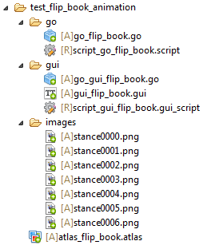
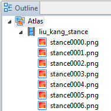
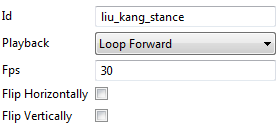
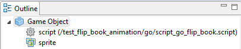
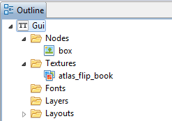
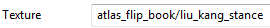

 |
1. Настройка анимации в атласе  Свойство компонента Atlas  2. Использование Flip-Book в GameObject  Скрипт function update(self, dt) sprite.set_hflip("#sprite", true) sprite.set_vflip("#sprite", false) end 3. Использование Flip-Book в GUI  Свойство узла box  Скрипт function init(self) local node = gui.get_node("box") gui.play_flipbook(node, "liu_kang_stance", function () print("animation complete!") end) end |
Created with the Personal Edition of HelpNDoc: Free help authoring environment